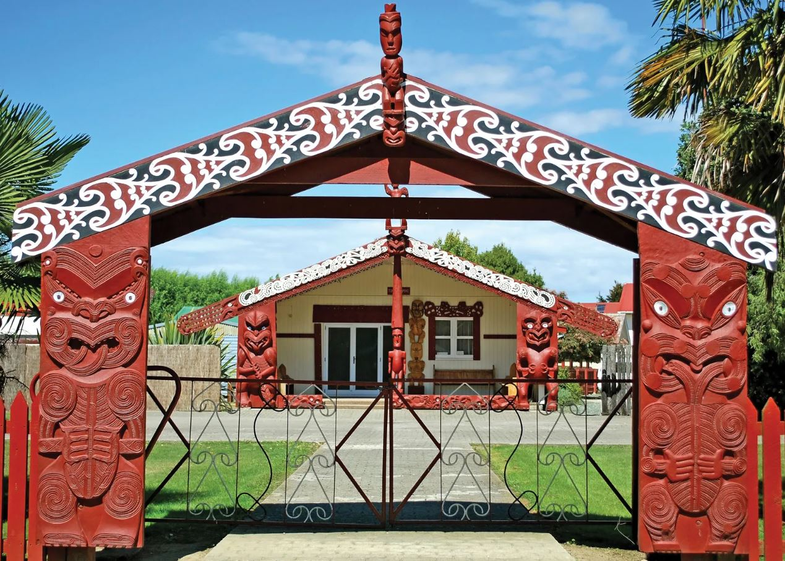
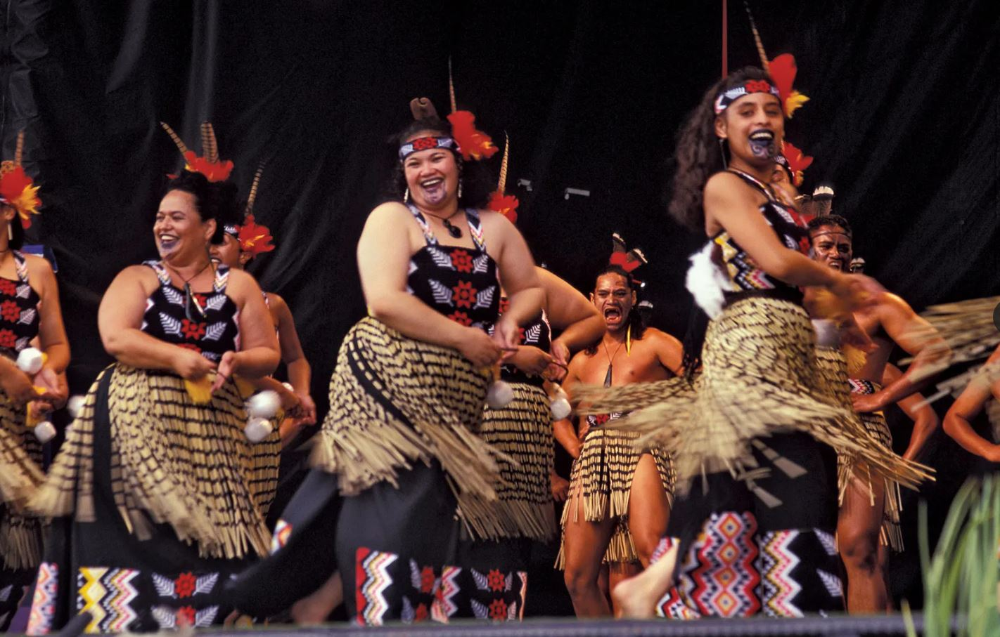
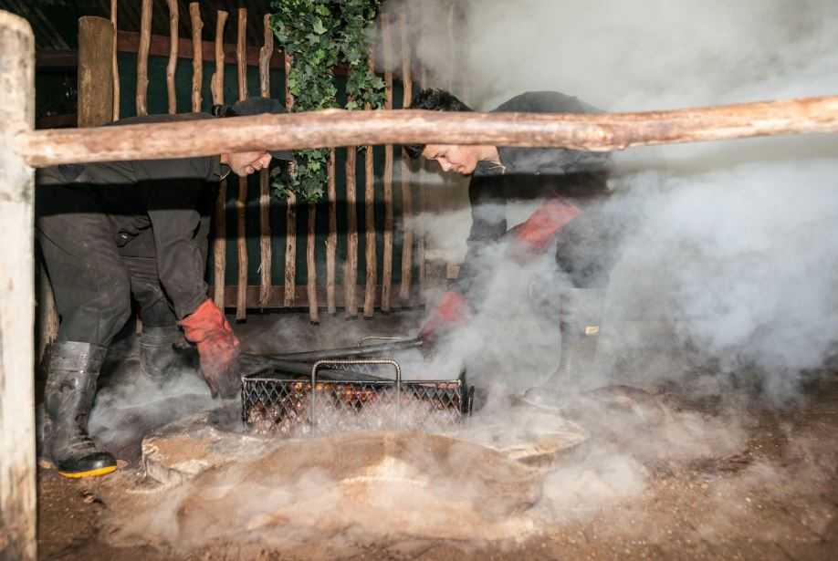
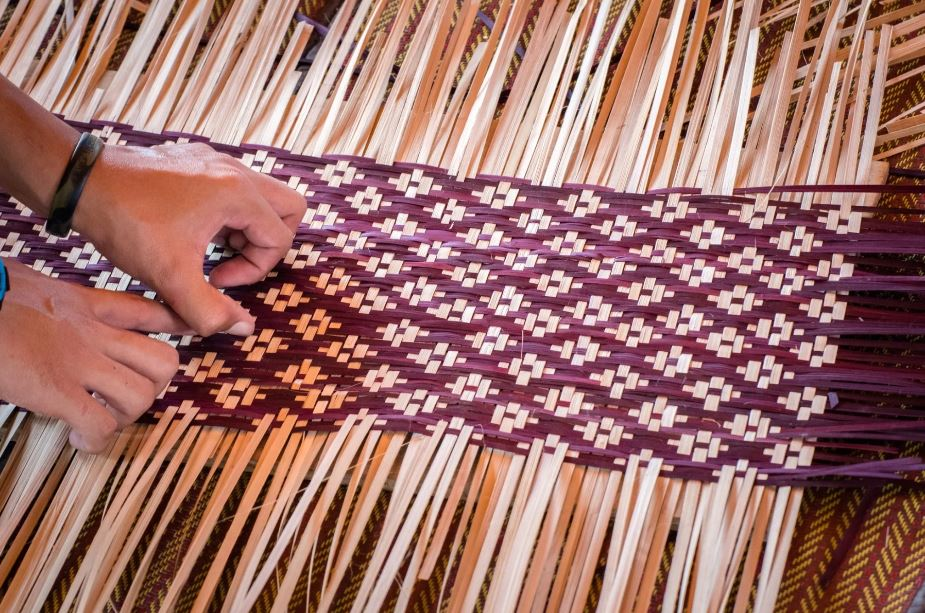

This is a Waharoa. It is known as the gate to a Maori village or, more commonly today, the marae or meeting place. It is intricately carved and represents the everyday worldand a sacred and communal space.

This is Kapa Haka. It is a traditional Maori performing art form that includes powerful and choreographed movements, chanting, dancing and facial expressions. The literal translation for Kapa Haka is "group performance".

This is Hangi. It is a traditional Maori method of cooking food in an earth oven, often using heated stones buried in a pit. It has been used for several centuries to feed large groups of people for special occasions. The process is slow-cooking the food by steaming it for hours.

This is Raranga. It is a traditional Maori craft of making baskets and other items from natural materials. It primarily uses the harakeke plant, which is the New Zealand flax. It is both a practical skill and a way of preserving cultural knowledge.